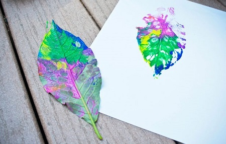
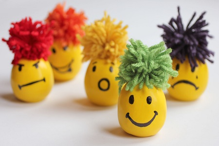
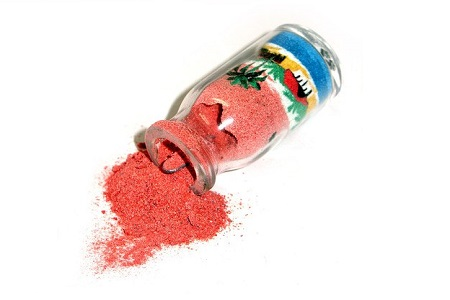
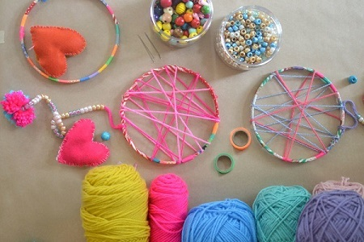
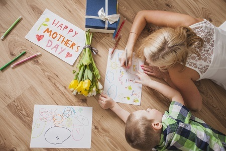
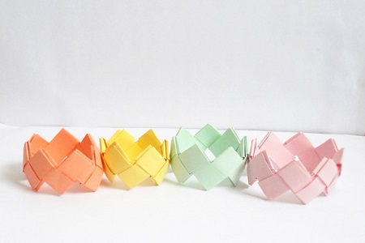
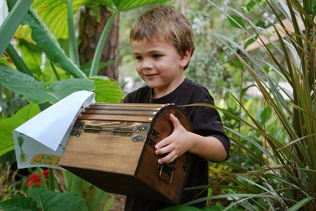
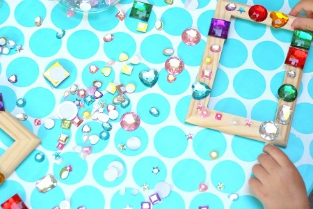

פעילויות יצירה
חותמת עלים על נייר
פעילות מהנה להכנת יצירה מיוחדת במינה! כל מה שצריך זה קצת עלים וצבעים, והילדים יוכלו להכין יצירות מדהימות בקלות!
עד 30 ש"ח
לחצו לפעילות מיקרופון בעיצוב אישי
עם חומרים שזמינים בכל חנות יצירה ובבית, מכינים מיקרופון נוצץ ומקורי ונהנים יחד עם הילדים מתחרות שירה ביתית
עד 50 ש"ח
ערך מוסף
לחצו לפעילותמר גמיש
הכנת "מר גמיש" מקסים מ-5 חומרים בלבד! פעילות קלה להכנה ומהנה ששווה לנסות
עד 10 ש"ח
ערך מוסף
לחצו לפעילות בקבוק שכבות צבעוני
מעוניינים בפעילות יצירה קלה ומהנה, מחומרים שקיימים לכם בבית? בקבוק שכבות חול צבעוני הוא אופציה נהדרת עבורכם!
עד 30 ש"ח
ערך מוסף
לחצו לפעילות לוכד חלומות
פעילות כיפית לה ערך כפול - צרו את לוכד החלומות עם ילדכם, ולאחר מכן תוכלו ליהנות בזכותו מלילות נקיים מחלומות רעים!
עד 50 ש"ח
ערך מוסף
לחצו לפעילות כרטיסי ברכה
פעילות שהיא גם יצירתית וגם שימושית. כל החומרים הנדרשים נמצאים בכל בית!
עד 30 ש"ח
ערך מוסף
לחצו לפעילות שרשרת מחרוזי מלח
פעילות חוויתית, קלילה ומהנה במיוחד, במהלכה יוכלו הילדים ליצור מגוון שרשראות חרוזים צבעוניות בעיצוב אישי וייחודי!
עד 50 ש"ח
לחצו לפעילות
צמיד צבעוני מאוריגמי
פעילות מיוחדת ומאתגרת, במהלכה הילדים לומדים להיות סבלניים, להקשיב להוראות וכך לזכות בתוצר בהכינו בעצמם!
עד 10 ש"ח
ערך מוסף
לחצו לפעילות חפש את המטמון
מעוניינים ליצור אתגר מחשבתי לילדים שלכם, ועדיין להישאר בבית? חיפוש מטמון זה הפתרון! נבנה על בסיס חדרים בבית.
עד 70 ש"ח
ערך מוסף
לחצו לפעילות {kind=link}
תאטרון בובות
בניית תאטרון בובות משלכם ביחד עם הילדים בקלות ובהנאה!,
כך שבסיום ההכנה תוכלו להציג כל פעם הצגה חדשה!
עד 100 ש"ח
ערך מוסף
לחצו לפעילות
משחק הזיכרון
משחק זיכרון הוא דרך נהדרת לאמן את המוח גם בתתקופת החופש ולשפר את הזיכרון והחשיבה! גם אתם תהנו מהמשחק!
עד 30 ש"ח
ערך מוסף
לחצו לפעילות
עיצוב מסגרת תמונה
עצבו ביחד עם כל המשפחה מסגרות תמונה דקורטיביות, יצירתיות וייחודיות, כדי שתציגו בביתכם את התמונות המשפחתיות בגאווה!
עד 30 ש"ח
ערך מוסף
לחצו לפעילות 